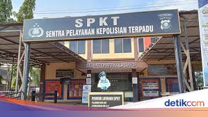

14 September 1945
Sejarah IT Polda Sumsel
Unit Teknologi Informasi dan Komunikasi (TIK) Polrestabes Palembang dibentuk untuk memenuhi kebutuhan digitalisasi di tubuh Polri. Fungsinya berkembang dari mengelola jaringan komunikasi dan perangkat IT, hingga mendukung penuh transformasi digital seperti pengelolaan website, sistem informasi internal, keamanan data, dan pelayanan publik berbasis teknologi. Saat ini, TIK menjadi pilar pendukung modernisasi operasional Polri di wilayah Sumatera Selatan.
TIK turut berperan penting dalam modernisasi sistem kerja Polri, terutama pada aspek: